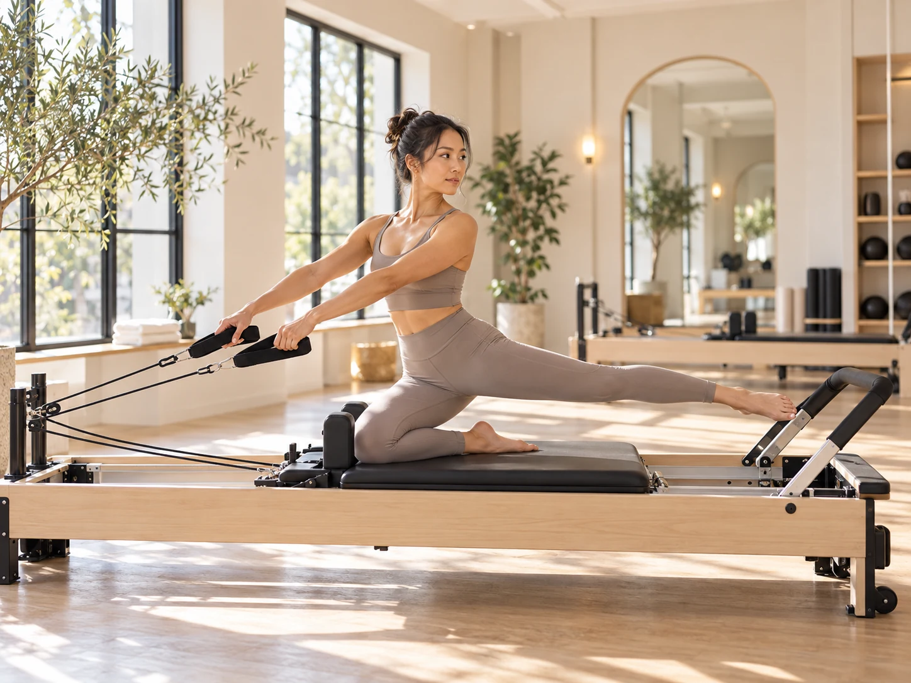
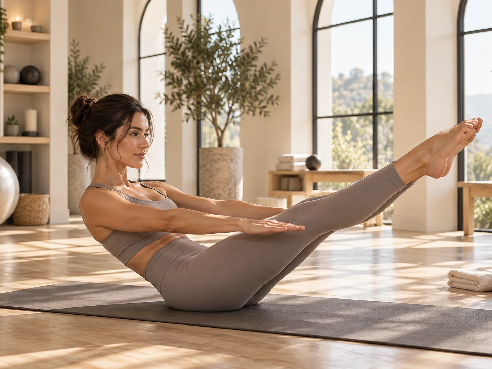

Why the reformer can feel harder
Springs create resistance and the moving carriage demands control. Exercises for the legs, arms, and trunk can feel more loaded than their mat versions, especially when you are working slowly and trying to keep the carriage quiet.
The machine also allows a teacher to change angles quickly. That can make a class feel more varied and athletic even when the movements are still rooted in control.
Why mat Pilates can humble people
On the mat, your body has to create much of its own support. There is no carriage to guide the path and no spring to assist a movement. That can make classic abdominal work, side lying series, planks, and roll ups extremely demanding.
Mat work also exposes control. If you rely on momentum, the movement usually tells on you immediately.

Springs do not always mean more difficulty
A heavier spring can make one exercise harder but another easier because it may provide more support. A lighter spring can increase the stability challenge because the carriage moves more freely.
That is why spring settings are not a simple difficulty scale. The right setting depends on the exercise, the goal, your body, and the equipment.
Which one is better for beginners
Either can work for a beginner when the instruction is appropriate. Reformer classes can be helpful because the equipment provides feedback and support. Mat classes can be excellent because they teach foundational control without depending on a machine.
The bigger question is whether the class matches your current ability and whether you can follow the cues safely.
The best choice is the one you will practice
If you love the reformer, use it. If you like the simplicity of mat work, do that. Many people get the most complete experience by using both over time.
You do not need to prove anything by choosing the version that sounds harder. Choose the format that keeps you engaged enough to build skill.
This article is general educational information, not individualized medical advice. If pain, injury, pregnancy, or a health condition affects your movement, speak with a qualified healthcare professional.